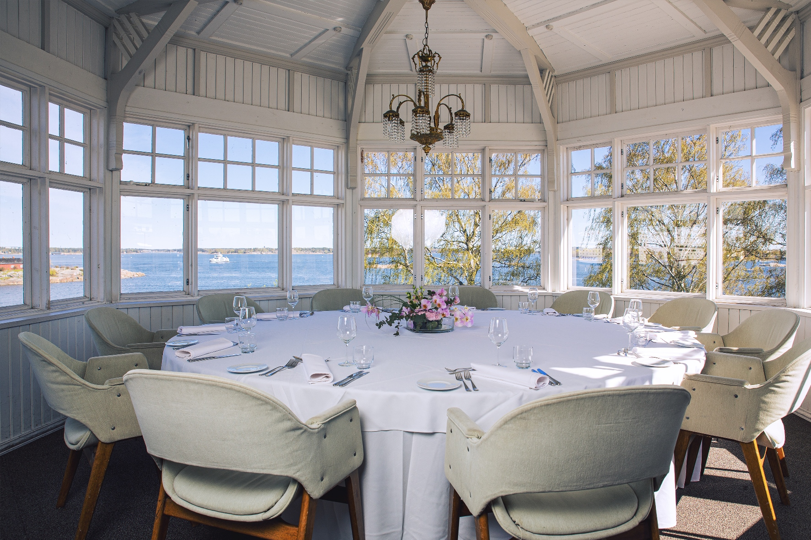
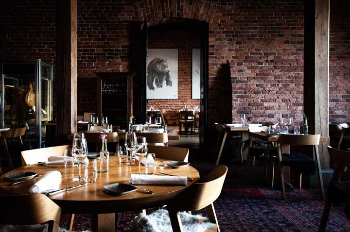
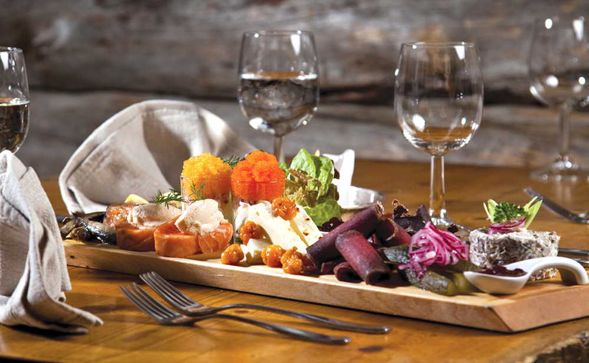
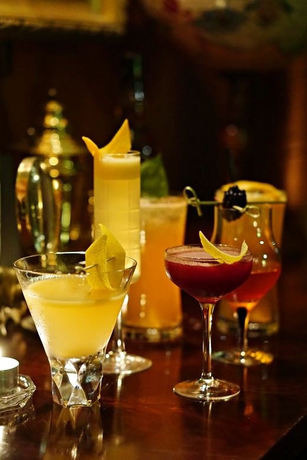

Ravintolat
Helsingistä löytyy jopa toista tuhatta ravintolaa. Niiden tarjonta vaihtelee rauhallisesta päiväkahvittelusta myöhäsiyön sykkeeeseen. Haluat sitten perehtyä perinteiseen Suomalaiseen ruokaan tai maistella urbaania ruokaa maailmalta, tulet löytämään itsellesi sopivan paikan.
Alle olemme listanneet muutamia suosituksia, jotta pääset seikkailussasi helposti alkuun!
Kappeli

"Esplanadin helmi - tarinaa jo vuodesta 1867. Kappelin vetovoimalla on pitkät perinteet. Espan puiston kauneus, lasiverannan avaruus, rakennuksen arvokas olemus ja moderni keittiö ovat valmiina tämän päivän asiakkaille."
Katso täältä lisää!Ravintola Saaristo
"Kaivopuiston edustalla, Klippanin luodolla, sijaitseva jugend-huvila on yksi Helsingin näyttävimpiä ja perinteikkäimpiä ravintoloita. Vuonna 1899 valmistuneella rakennuksella on pitkä ja värikäs historia"
Katso täältä lisää!Ravintola Nokka
"Suomalaisen ruoan ja juoman gastronominen lippulaiva löytyy Katajanokalta. Ystävien kesken Nokasta."
Katso täältä lisää!Ravintola Lappi
"Lappi Ravintolan ruoka ja sisustus ovat ne tekijät jotka nostavat Lappi Ravintolan käymisen arvoiseksi paikaksi. Kotimaiset, puhtaat ja ennenkaikkea tuoreet raaka-aineet takaavat aidot makunautinnot."
Katso täältä lisää!OmNam

"OmNam on täysin vegaaninen ravintola Kampissa, Annankadun tunnelmallisella sisäpihalla. Ruokaa tehdään etnisin vivahtein, mutta myös tutummin mauin."
Katso täältä lisää!Pupu

"Valmistamme käsintehtyjä salaatteja laadukkaista raaka-aineista ja tuemme elämäntapaa, joka edistää sekä ympäristön että yksilön hyvinvointia. Herkuttele maailmasta parempi paikka - salaatti kerrallaan!"
Katso täältä lisää!Cafe Torpanranta

"Munkkiniemenrannassa sijaitseva kahvila-ravintola Café Torpanranta tarjoaa vuodenaikojen mukaan muuttuvat merimaisemat niin mukavalle kahvihetkelle kuin työpäivän katkaisevalle lounastuokiollekin. "
Katso täältä lisää!Karl Fazer Cafe

"Vuonna 1891 Karl Fazer perusti Kluuvikadulle ranskalais-venäläisen konditorian, josta tuli laadukkaiden herkkujensa ja miljöönsä ansiosta nopeasti kaupunkilaisten suosima kohtaamispaikka. Kahvilassa kohtaavat nykypäivän trendit ja Fazerin 120-vuotiset perinteet sulassa sovussa."
Katso täältä lisää!Art Cafe Taideterassi

"Taidekahvila Helsingin upeimmalla terassilla Linnunlauluntiellä Sinisessä huvilassa Töölönlahden rannalla."
Katso täältä lisää!Ateljee Bar

"Vuodesta 1951 asti toiminut Ateljee Bar sijaitsee Hotelli Tornin ylimmässä kerroksessa. Ateljeen terassilta on hengästyttävät näköalat Helsingin kattojen ylle - aurinkoisella säällä voi nähdä merelle Tallinnaan saakka ja pimeällä kaupungin valot hehkuvat kirkkaana."
Katso täältä lisää!Trillby & Chadwick
"Hildebrand Trillby ja Ashcroft Chadwick perustivat vuonna 1898 Lontoosen pienen yksityisen etsivätoimiston, kyllästyttyään paikalliseen heikosti toimivaan poliisijärjestelmään. Vuonna 1924 perustettiin Helsingin toimisto, jonka päätehtävänä oli valvoa Suomen kieltolakia ja torjua alkoholin salakuljetusta."
Katso täältä lisää!Hernesaarenranta

"Hernesaaren Ranta on tapahtumakeskus meren äärellä hyvien kulkuyhteyksien päässä. Tarjolla on upeita keikkoja ja erilaisia mielenkiintoisia tapahtumia."
Katso täältä lisää!Mattolaituri

"Mattolaituri on Kaivopuiston rannassa, kauniin Uunisaaren ja Harakan välisen salmen kohdalla sijaitseva merellinen terassiravintola. Upeaa merinäköalaa voit ihailla viinilasin kera joko omalla beachillämme rantatuolissa istuen tai vaikkapa yläkerran lounge-sohvilla rentoutuen. "
Katso täältä lisää!Rymy-Eetu

"Tervetuloa syömään, juomaan ja tanssimaan pöydillä! Hulvaton Rymy-Eetu on suomalais-saksalainen ravintola Helsingin ydinkeskustassa, Erottajalla, Esplanadien kupeessa."
Katso täältä lisää!